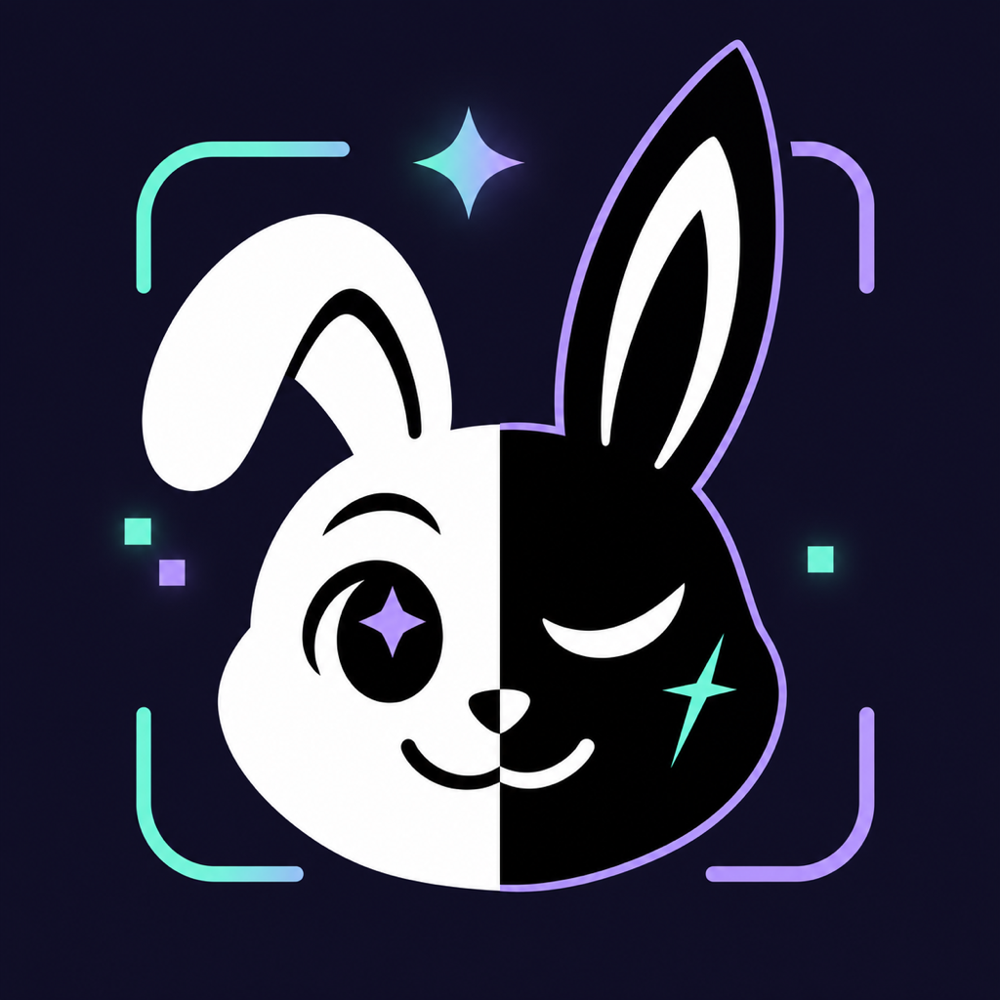

把喜欢，妥帖收藏。
管理相册，上传照片。
让每一个珍贵瞬间，都有自己的位置。
我的片刻 生活的切片
相册管理 / 照片分享
SnapFlow幻兔让风带走杂念，让眼睛收藏世界。
不止一种打开方式
从一张照片，到一整个灵感世界。
少一点切换，多一点沉浸。
管理相册，上传照片。
让每一个珍贵瞬间，都有自己的位置。
图文记录、AI 创作入口。
把脑海中的一闪而过，变成表达。
文字与表情私信，互动与系统通知。
在同一份热爱里，遇见彼此。
跟着好奇心出发
看一段故事，听一首歌，或只是玩一会儿。
在日常之外，发现另一个喜欢的世界。
你的灵感宇宙，随时开启
选择你的方式，与幻兔见面。
iOS 内部测试中；公开下载尚未开放
你可能想知道
幻兔（SnapFlow）是集内容发现、相册管理与创作分享于一体的应用。你可以浏览图文、图集、图书、漫画、音乐、视频，也可以体验轻量游戏，记录和分享喜欢的瞬间。
幻兔面向 iOS 和 Android 设备开发，目前尚未开放公开下载。微信小程序也将在准备就绪后开放，你可以通过本页了解各平台状态。
可以。幻兔提供相册管理、照片上传与分享、图文发布和收藏功能，让记录与灵感都能留在身边。
你可以阅读我们的隐私政策，了解信息收集、使用与个人信息保护方式。
在 App 的“设置 → 隐私设置”中，可以选择谁能给你发私信、在线状态可见范围，并管理黑名单。“显示已读状态”默认开启；关闭后，对方无法看到你是否已读，你自己的未读计数仍正常更新。
请更新至配套版本，在“设置 → 账号与安全 → 注销账号”阅读说明并完成身份验证与最终确认。注销不可恢复，可在下方的“注销进度”查看处理状态；具体数据处理规则见隐私政策。